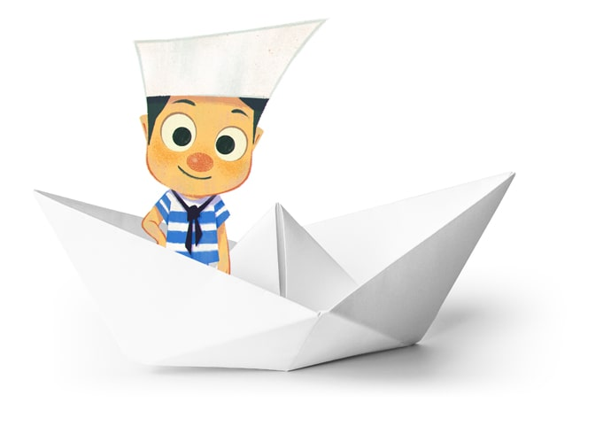

QU'EST CE QUE
PHILOMOOS?
Sous la forme d’ateliers de philosophie et de création, nous proposons aux enfants et aux
adolescents de réfléchir à partir d’un problème philosophique et de créer un objet ensemble,
par petits groupes, ou par classes, lors d’ateliers d’éducation artistique et culturelle.
Dès le plus jeune âge, les participant.es des ateliers sont invité.es à
réfléchir ensemble à partir d’un problème philosophique. Nous proposons des sujets et des
problèmes exigeants et nous sommes là pour les aider à en relever le défi !
Tout l’enjeu pour nous est de guider les enfants et les adolescents vers un enrichissement individuel et
collectif où l’écoute, la parole et l’expression des intuitions de chacun sont encouragées.
En deux temps : on pense puis on crée ! Après chaque discussion philosophique, un atelier créatif « sur mesure
» est proposé. Inspiré de divers courants artistiques, avec une influence nette des courants surréalistes,
ils sont conçus comme des ateliers « do it yourself ». Chaque participant.e quitte l’atelier en possession
d’un objet unique !
Depuis plus de 3 ans, nous réalisons nos ateliers principalement à la bibliothèque du Centre
Pompidou à Paris. En partenariat avec l’Éducation Nationale, nous développons également des
ateliers en classes de primaire dans le département du Finistère (29).


POURQUOI
PHILOMOOS?
Dans la philosophie antique, il n'est pas rare de trouver l'image de la navigation associée à l'art de penser ou de philosopher. Aristote conseillait d'écarter son vaisseau de la houle et des tempêtes comme il recommandait à qui voulait philosopher de s'écarter de ses passions. Le nom "philomoos" est un jeu sonore à partir du mousse, ce jeune matelot, qui apprend l'art de la navigation.
VOUS SOUHAITEZ ORGANISER
UN ATELIER ?